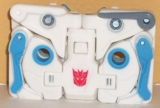
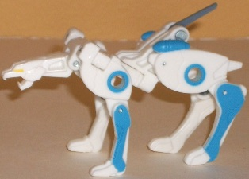
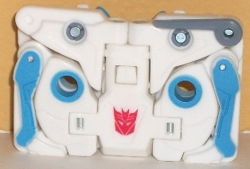
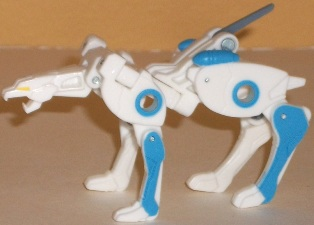
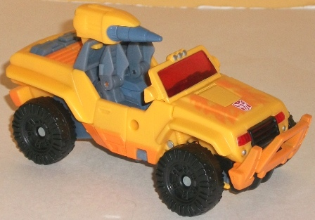
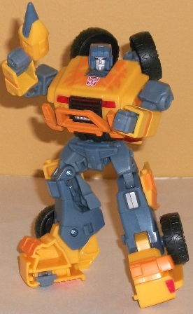

 
Allegiance : Decepticon
Difficulty of Transformation : Easy
Color Scheme : White and some pale dull sky blue, yellow, and gray
Individual Rating : 7.5
(NOTE: Because this is a repaint, this is
not a full-blown review. This mainly covers any changes made to the mold
and the color scheme, and merely compares it to Universe 2.0 Hound w/ Ravage.
For a review on the mold itself, read the review of Universe 2.0 Hound
w/ Ravage
here
.)
 Ravage
(Shattered Glass)
Ravage
(Shattered Glass)


Allegiance
: Decepticon
Difficulty of Transformation
: Easy
Color Scheme
: White and some pale
dull sky blue, yellow, and gray
Individual Rating
: 7.5
Even though the other
toys in the set (with the possible half-exception of
Decepticon
Slice
) are all in the "Generation 2 Redux" theme, something had to
be done with the Ravage mold that comes with the deluxe Universe 2.0 Hound
toy-- so why not make it into the already-established Shattered Glass version
of Ravage? Based on the Kiss Players G1 Ravage redeco "Glit", white-and-light-blue
is certainly a very different color scheme from the usual black stealthy
Ravage, but then again that's sort of the point of Shattered Glass. The
blue does work quite well against the white, and it's not like white is
a totally out-there color for a cat either, so overall the scheme works
(though in my opinion, not as good as the original Ravage's). That said,
he could use a few more blue paint apps to help break up the white a bit
more, and the gray tail looks out of place considering that's the ONLY
gray part on Ravage's entire body. On a side note, Ravage's head sculpt
is too fierce-looking to easily be associated with the overly-friendly
Shattered Glass version, but given that SG Ravage is still a cougar with
the same overall head design, I can see why Fun Publications didn't more
or less waste a new head sculpt on this little guy.
No mold changes have
been made to Shattered Glass Ravage.
 Turbomaster
Turbomaster


Allegiance
: Autobot
Size
: Deluxe (comes in a 3-pack
with Shattered Glass Ravage and
Double Punch
)
Difficulty of Transformation
: Medium
Color Scheme
: Gray, light orangish
yellow, black, and some light orange, silver, and transparent light red
Individual Rating
: 9.1
"Turbomaster" here is
intended to be the late European-G1 toy Scorch, who was himself a turbomaster--
but apparently they couldn't get the name rights to Scorch, so they went
with this more generic name. When it comes to the mold, though, "Turbomaster"
is a bit more a stretch to see as Scorch compared to most of the other
toys in this set-- the original Scorch was a truck, not a jeep, and the
head was definitely very different-- the Hound head doesn't really work
all that well. Color-wise, Turbomaster here is a pretty darn good replica
of Scorch-- bright yellow with light orange flames in vehicle mode, with
the gray helping to tone things down a bit in robot mode. He still definitely
has that "loud late G1/G2" era vibe about him, with light orange flames
on light yellow/orange not exactly being the most subtle color scheme for
a jeep. The light red windows are also a bit obnoxious, too-- but again,
that's part of the whole "theme" of the set, celebrating the super-loud
colors of the era. Still, I think the gray is way too dull and just looks
out of place among the other colors. I can hardly blame Fun Publications
for this-- these colors ARE on the original Scorch, after all-- but that
doesn't make it look any better. Also, like the other toys in this bagged
add-on set, Turbomaster doesn't have all that many paint apps compared
to his other convention exclusive brethren. He has an adequate number,
sure, but FunPub usually goes above-and-beyond the call of duty when it
comes to stuff like this. Stiff like his robot waist and upper legs could
really use a bit more paint.
No mold changes have
been made to Turbomaster.
The Turbomaster &
Shattered Glass Ravage duo, while not bad by any stretch of the imagination,
is one of the more lackluster sets to come out of Botcon 2010. Neither
of them have particularly great color schemes, even taking into account
the kitsch "neon" theme of this years' set, and the usage of the Hound
mold into Scorch is honestly a little of a stretch.
Reviews by Beastbot